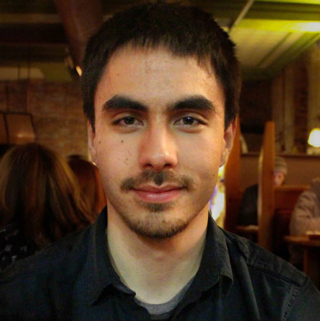

<div class="row">
  <div class="col-md-4">
    
  </div>
  <div class="col-md-8">
    <ul class="list-unstyled">
      <li>
        <i class="fa fa-map-marker"></i>
        Burlington Area, VT
      </li>
      <li>
        <i class="fa fa-book"></i>
        B.S. Computer Software Engineering
        <a href="http://vtc.edu">VTC</a></li>
      </li>
      <li>
        <i class="fa fa-money"></i>
        Web Developer @
        <a href="http://daftlabs.com">Daft Labs</a>
      </li>
    </ul>
  </div>
</div>

Hello, I am a full stack engineer who fervently, but pragmatically, utilizes clean code practices to deliver quality software solutions. I'm good at modernizing legacy projects, developing greenfield projects, mentorship, reasonable scrum implementations, object oriented programming, and functional programming.